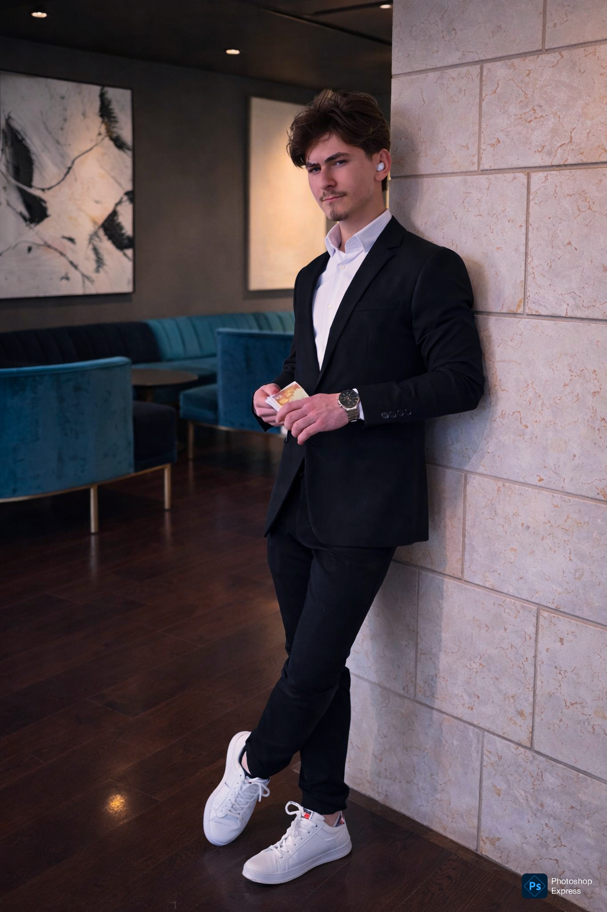
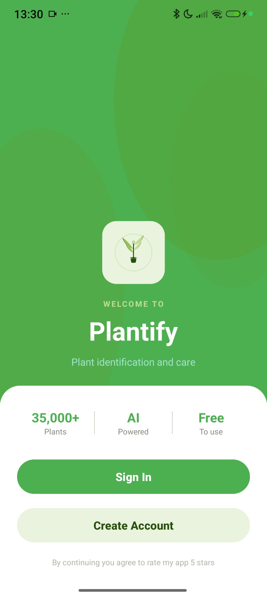
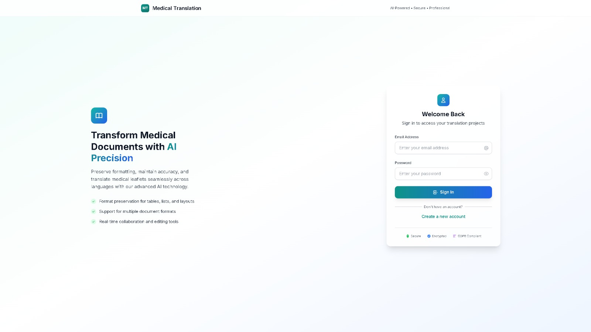

Languages
The core languages I write production and personal code in.
I care less about toy demos and more about shipping software that solves an actual problem end-to-end.

I'm a Computer Science student and software developer who enjoys turning ideas into shipped products, from Android apps with AI inside them to automation scripts and game modifications.
My work spans mobile development, AI integration, and backend & tooling. I built Plantify, an AI-powered Android app that identifies plants and helps people care for them; I'm building Voidline, a performance-focused Minecraft mod in Kotlin; and I've shipped Python automation that recolors hundreds of texture assets in a single run.
I'm drawn to the parts of software most people skip: handling errors gracefully, keeping work off the main thread, persisting state correctly, and designing things so they stay clean as they grow. I learn fast, ask good questions, and care about the people who actually use what I build.
Not a list of percentages. It's a map of where I'm comfortable and what I use to get things done.
The core languages I write production and personal code in.
Native Android apps with real navigation, storage and lifecycle handling.
Wiring large language models and external services into real product flows.
Writing code that's structured to be read, debugged, and extended.
The day-to-day environment I work and version control in.
Exploring end-to-end web systems: APIs, databases and processing pipelines.
Four projects that show range, from a polished Android product to backend automation and a performance-focused game mod.

An AI-powered Android app that identifies plants from a photo, gives personalized care guidance, tracks plants in a personal garden, and reminds users when to water, with a built-in plant-care chatbot, "BloomAI".
A Minecraft Forge 1.8.9 modification built in Kotlin that enhances Hypixel SkyBlock Slayer gameplay with clean HUD overlays, boss-fight tracking, and event-driven feature modules, all designed to stay low-clutter and performant.
A Python automation tool that mass-processes and recolors Minecraft texture assets for resource-pack development. It walks an entire pack, applies per-category HSV hue shifts and gradients, and exports recolored variants, turning hours of manual editing into a single script run.

A full-stack platform that translates medical documents with AI while preserving professional terminology, layout, and formatting. Documents flow from upload → parsing → GPT-4 translation → QA validation → a formatted DOCX export that mirrors the original 1:1.
Less screenshots, more architecture. Expand any project to see the data flow, the engineering challenges I hit, and what I took away.
ConcurrentHashMap<UUID, …>Early experience testing software taught me how real users break things, and how to report it so it actually gets fixed.
Quality assurance & playtesting
Beta-testing for friends & games I play
A look at what I'm building on GitHub. The best way to judge a developer is to read their code.
Minecraft Forge 1.8.9 mod in Kotlin enhancing Hypixel SkyBlock Slayer gameplay: HUD overlays, boss tracking, modular features.
AI-powered Android app: plant identification, garden management, BloomAI care chatbot, weather and watering reminders.
Python automation that batch-recolors Minecraft texture packs via HSV hue shifting and gradient rules, preserving transparency.
Full-stack medical document translation platform: Next.js + FastAPI + PostgreSQL with a GPT-4 translation and QA pipeline.
Want to see more? Pinned repos, contribution history and works-in-progress live on my profile.
@IcyDroplet on GitHubPrefer the traditional format? Download or print a recruiter-friendly resume.
A one-page summary of my education, projects, skills and experience, formatted to be skimmed in under a minute and to print cleanly.
Open to internships, freelance projects, and conversations about software. I usually reply within a day.